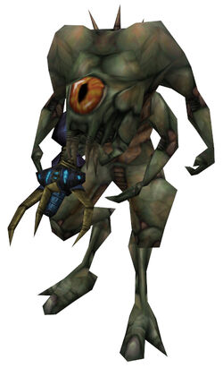

Nope, Believe it or not, that will actually make it even LESS canon.
Half Life: Opposing Force takes place about halfway into the original Half Life, right? Near the middle of Op4, you see Gordon jump into that portal. Have you noticed that when the Race X aliens start appearing when the XEN aliens stop?
This is because Nihlianth, as scientists in Half life has stated, was holding up the portal sending the XEN aliens in from the other side. Gordon killed Nihlianth, causing the portal to close.
If they were to replace the Race X aliens with XEN aliens, it would totally omit this, giving Gordon no real reason to kill Nihlianth, because it wouldn’t stop the XEN aliens from attacking.
Superbanjo, I think your post is a little incorrect.
Think about the first time you see this guy:

He kills the guard, grabs the scientist, and teleports out. This is really early in the game.
First: What about the Xenians that had already been teleported in?
Second: We don’t know how long Gordon takes to find Nihilanth and to kill it.
Third: Think about HL2, vortigaunts, headcrabs (some of them wasn’t even on Black Mesa) and even barnacles are still there. However Nihilanth died a long time ago.
So, I don’t see how replacing Race X with Xenians can “make it even LESS canon.”
Fine, sure, they are already there. But no new ones are teleporting in, now are they?
Judging by the length of the XEN chapters in Half-Life, I would say…not very long. You need to remember that HALFWAY through OP4, Gordon jumps into the portal. If we were to play Half-Life and Op4 side by side, starting at that point, without dying, I think Half Life would be completed first.
Who says that they only teleported into Black Mesa? That wouldn’t make much sense. Personally, i think while they were teleporting into Black Mesa, many of them were also teleporting into cities, towns, houses, etc. Making them only teleport into Black Mesa wouldn’t make much sense now would it? By the time Gordon killed Nihlianth, there could’ve been enough teleported in there to supply the amount seen in Half Life 2. And then the Race X aliens start attacking.
1 and 2: Pretty much. But maybe a great number has already teleported in, and now you’re just fighting them.
3: If that was true, then why the hell the government did a cover-up operation in the first place? And it would make sense if the resonance cascade had a small radius.
Because they were already prepared to be sent in. According to the instruction manual of Half Life: Opposing Force, Adrien Shepherd wrote that “They should be prepared if it happens tomarrow”
“It” is obviously referring to the Resonance Cascade. Once the soldiers got the word, they immediatly took off. This was not very long after the actual cascade, probably before the mass invasion of the XENians around the globe.
The actual cascade, you need to remember, lasted for a few minnutes. It opened a massive portal that spontainiously teleported XENians in all locations in our earth dimension. By the end of the game, the portal should have been well closed. But by that time the Combine might’ve noticed the cascade, and ordered Nihlianth to hold the portal open so the Combine can send more of their alien slaves, aka, the vortigaunts.
After Gordon defeated the Nihlianth, the Combine continued the invasion by sending their own Race X aliens to attack earth. After Adrien destroyed them, they mounted a full-fledged attack on the earth, wiping out all of earth’s forces, starting the 7 hour war.
Quote:
Originally Posted by Marc Laidlaw
Thanks for your letter. Adrian Shepard is a bit like Schrodinger’s cat he’s neither canon nor non-canon, depending on whether or not the G-Man may or may not have a use for him.
That’s what i saw.
This is indicating that they are still debating over whether or not to include Op4 as canon. Currently, if we include Op4, Shepherd is in stasis, being detained by the G-Man and his employers.
Speaking of which, we never hear about his employers anymore…do you think they scrapped them?
Well… I’m not changing my mind on that and you probably won’t change yours as well. (I’m talking about the post from the quote above)
That’s not correct. Nihilanth wasn’t taking orders from the Combine, he was actually being hunted by the Combine, that’s why he hided in Xen. And that’s also why he was the last of his specie, because of the Combine.
Nihilanth was invading the Earth in an attempt of building an army of new slaved soldiers (probably us) to fight against the combine. This part I didn’t read anywhere, I’m just guessing. What other interests it could have on Earth?
If that quote isn’t proof enough i don’t know what is.
The original intention of Nihilanth, in my mind, was to take advantage of the dimensional rift to flee away from XEN and to earth, away from the Combine. During this period, the Combine could’ve intercepted Nihlianth and somehow forced him to temporarilly do their bidding, and keep the portal open. Causing a direct change in mission for all vortigaunt troops.
I think what happened was that the Resonance Cascade created a small rift that Nihilanth forced open and held open for his race to come to Earth, possibly because they were sick of Xen?
Since the RC occurred in Black Mesa, it’s logical for all the aliens to spawn mostly around that particular area. Once the rift enlarged, however, aliens and Portal Storms began to spawn everywhere during “The First Days”.
Then the Combine saw the rift and opened it up even further, started the Seven Hours War, then 10-20 years later, after aliens were given time to spread, HL2 starts, which explains why there’s alien crap all over the place.
They don’t really live on XEN. The Combine had since destroyed their homeworld. Nothing is truly native to XEN…i’m pretty sure either Marc Laidlaw or Doug Lombardi said that.
XEN is literally a dump, the trash heap of the universe, no resources, nothing. According to the end of Half Life and Opposing Force, Black Mesa had been studying XEN creatures for some time now, and started experimenting with Race X creatures.
The Resonance Cascade could’ve opened portals to these two places only because they were the two that had scientists opening portals to them before. Almost as if it has memory of where you went before. The Resonance Cascade used destinations of portals already open in the facility…in this case…Xen and Race X.
Now, Nihilanth immidiatly noticed the portal and took the chance to escape XEN and flee to earth, which is rich in resources, unlike XEN. Race X, however, is probably still in control of the Combine at that time, and didn’t notice or chose not to take advantage of their portal to earth.
In my mind, Nihilanth eventually was intercepted by Combine forces after the resonance cascade and ordered Nihilanth to hold open the slowly closing portal to earth so the Combine can send more of it’s forces. Nihilanth, being the last of his race (the Nihilanth species), and being the leader of the vortigaunts, reluctantly agreed, and ordered all of his troops to…pretty much cause mayhem. Meanwhile, on the Race X homeworld, the Combine ordered the Gene Worm to hold open their portal, in case the XENian invasion fails.
Once Nihilanth was destroyed, enough XENians were in earth to completly populate it…as shown in half life 2…The Combine orders a complete invasion of Race X forces starting during the Black Mesa Incident, and after Nihilanth was defeated. That one Race X alien near the beginning was one of the first to be sent as backup, then a full fledged invasion soon afterward.
Once Shepherd destroyed the Gene Worm, the Combine realized that the Human Species, their homeworld, and their technology might be an important asset to their empire, and held open, themselves, small remnants of the two portals and launched a full scale attack in what would later be called the 7 Hour War
I never said that Xen was their homeworld. I know fully well that nothing is native to Xen, and that Nihilanth and his race were fleeing from the Combine.
I was saying that, having fled to Xen for such a long time, one would think that Nihilanth became quite sick of Xen by that time which is possibly why he wanted to keep the rift open to bring everyone on through.
But seeing as the Combine were able to come to Earth anyway, doesn’t that seem to defeat Nihilanth’s original purpose of fleeing?
Founded in 2004, Leakfree.org became one of the first online communities dedicated to Valve’s Source engine development. It is more famously known for the formation of Black Mesa: Source under the 'Leakfree Modification Team' handle in September 2004.